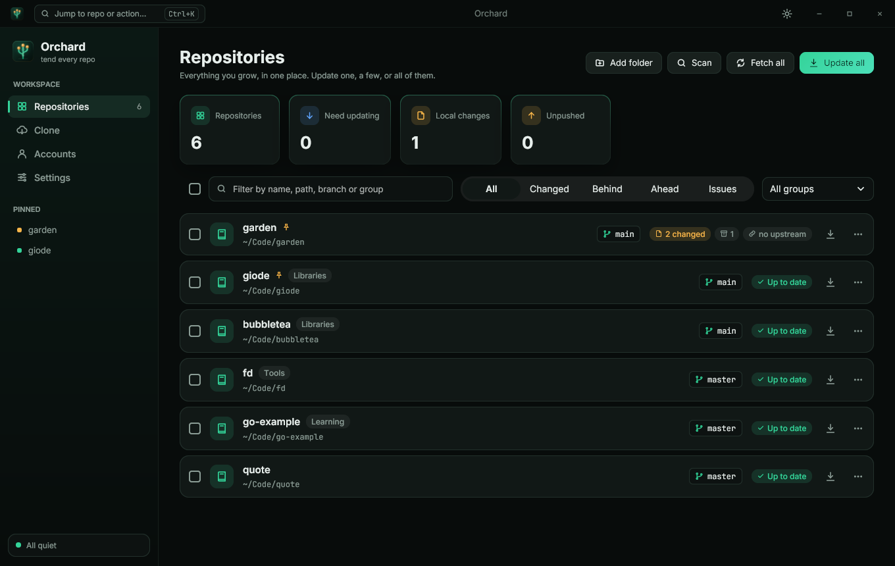

Tend every repo.
Orchard keeps every git repository on your computer in one place. Add the ones you already have, or scan a folder for all of them, clone new ones, and update one, a few or all of them with a click instead of visiting each folder.

Every tracked repository with its branch, incoming and outgoing commits, local changes and problems.
Every repository, one window.
See what's behind, ahead, changed or broken across everything you work on, then fix it in bulk.
Update all, fetch all
Or check a few and update, fetch, push, group or untrack them together. Updates run in parallel with a configurable limit and report a summary.
Stash around the pull
Local changes can be stashed before a pull and restored after it, if you want, so an update never stops on a dirty tree.
Sections by host
github.com, gitlab.com, your own server, local remotes, no remote; or your own groups, or none. Fold a section away or update everything in it.
Filter and search
Filter by changed, behind, ahead or issues; search by name, path, branch or group; organise with groups and pins.
Fresh in the background
Background fetch keeps incoming and outgoing counts current without you asking.
Add them however
Add a folder, drop folders on the window, or scan a directory tree and pick which of the found repositories to add.
Any host that speaks git
Clone by URL with live progress. Connect accounts, public or self-hosted, to browse your repositories and clone many at once. Tokens are kept in the system credential store (Keychain, Credential Manager, Secret Service), never in the settings file.
Fast with the keyboard
A command palette jumps to any repository or runs any action.
Everything git does, and what it doesn't make easy.
Open any repository for its history, changes and branches, plus the forge features you'd otherwise visit a website for.
- HistoryA commit tree with curved, coloured lanes across all branches; search; branch, tag, check out, cherry-pick, revert or reset from any commit.
- ChangesStaged and unstaged files with diffs; stage, unstage, discard, commit, amend, commit & push.
- BranchesSwitch, merge, rebase, rename, prune merged branches, and delete several at once, on the server too.
- TagsCreate, push, and delete any number of tags at once, locally or everywhere, in a single push.
- ReleasesGitHub, GitLab and Gitea/Forgejo releases: create, publish drafts, and delete many at once with their tags.
- Pull requestsList open pull and merge requests and close or merge many at once.
- WorkflowsCI runs with live status; re-run, cancel or delete many runs at once, or start a workflow by hand on any branch or tag.
- Stashes & remotesEverything you'd expect.
- RewriteRemove files from all of history, scrub leaked secrets, fix an author, strip large files, squash, reword, undo, and force-push the result.
- Night & morningDark "night orchard" and light "morning orchard" themes, a custom frameless window and animated transitions.
Download Orchard
Builds for each platform are attached to the latest release on GitHub.
Latest releaseOrchard needs git on the PATH.
git-filter-repo is optional and makes history rewrites fastest.
Or build it yourself with the Giode CLI:
# from a clone of the repository
giode run
giode build linux windows
Your repositories stay yours.
Orchard has no servers, no accounts of its own, no analytics and no tracking. It collects nothing and sends nothing to its developer. This policy covers the Orchard app from GitHub and the Microsoft Store.
What stays on your computer
The list of repositories you add (their folder paths, names, groups and pins), the hosting accounts you connect (service, host and username) and your settings are saved in one file, Orchard/state.json in your user configuration folder (%AppData% on Windows, ~/Library/Application Support on macOS, ~/.config on Linux).
Account tokens are kept in your system's credential store (Credential Manager, Keychain or Secret Service), never in that file.
What goes over the network
Orchard runs the git installed on your computer, which talks to the remotes of your repositories when you fetch, pull, push or clone, and every 15 minutes for automatic fetching (you can change or turn this off in Settings). git uses your own SSH keys and credential helpers.
When you connect a GitHub, GitLab, Gitea/Forgejo or Bitbucket account, Orchard calls that service's API with your token to show and manage repositories, releases, pull requests and workflows. Nothing else is contacted.
What is shared
Nothing with us or anyone else. The services you connect receive what any git client sends them, under their own privacy policies. Links you open in Orchard open in your browser.
Removing your data
Removing an account in Orchard deletes its token from the credential store. Deleting the Orchard folder in your configuration folder removes everything else. Your repositories themselves are never uploaded anywhere by Orchard.